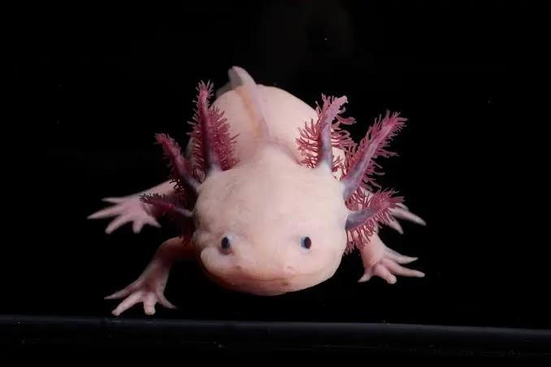

AXOLOTL test
The axolotl is a unique aquatic salamander known for its feathery external gills and permanent “smile.”
Unlike most amphibians, it stays in its larval form its entire life—a trait called neoteny.
VAQUITA
The vaquita is the world's rarest marine mammal, a small porpoise found only in the northern Gulf of
California.
It has distinctive dark rings around its eyes and lips, giving it a gentle, shy appearance.
SPIX'S MACAW
The Spix's macaw is a rare, bright blue parrot native to Brazil also known for its striking color and gentle
nature.
Once extinct in the wild due to habitat loss and trapping, it's now the focus of ongoing reintroduction efforts.


KAKAPO
The kakapo is a rare, flightless parrot from New Zealand. It’s nocturnal, has a soft, owl-like face, and a musky
scent.
The kakapo is critically endangered, with intensive conservation efforts helping its population slowly recover.
RAFFLESIA
The rafflesia is a rare parasitic plant known for producing the world’s largest single flower.
It has no stems, leaves or roots and emits a strong odor of rotting flesh—earning.